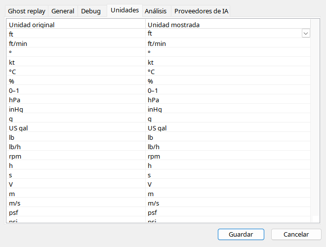

Elija unidades por magnitud y compruebe etiquetas. La geometría clásica puede seguir en pies aunque el texto use metros. Presión barométrica, de aceite e hidráulica son distintas. Aceite usa psi. Las posiciones son enums: FLAPS 5 es una etiqueta de detente, no necesariamente grados.
| Opción / acción | Funcionamiento y limitaciones |
|---|---|
| Selección | Unidad compatible por magnitud; inspector/gráficos convierten valor y título, no la fuente. |
| Altitud / velocidad | Texto convertido separado de geometría tradicional del instrumento. |
| Presión / combustible | Diferencie aceite/baro y cantidad/flujo; aceite en psi. |
| Enums | Etiquetas de interruptores son mapas, no conversiones; desconocidos numéricos. |
